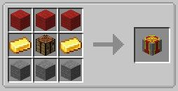

Embark on a journey beyond the limits of the ordinary with "Infinite Horizons," a modded superflat survival experience that shatters the boundaries of conventional Minecraft gameplay.
Immerse yourself in a world where the possibilities are as boundless as the sky above, and the challenges are as diverse as the mods that await you.
"Infinite Horizons" is an expansive Minecraft modpack that offers a boundless journey of creativity and exploration.
Set in a classic superflat world with endless skies, this kitchen-sink style modpack combines the essence of skyblock challenges
(such as cobblestone and material generation) with the rich diversity of modded gameplay. Delve into a realm where villagers play a pivotal role,
fostering a dynamic interaction between players and NPC communities. With a vast array of mods at your disposal, from technology to magic,
"Infinite Horizons" invites you to forge your own path, shaping the landscape and unraveling the potential of the modded space.
Do you want to enjoy "Infinite Horizons" with your friends? Opt for BisectHosting for all your server needs!
New customers can use KCtops6 to save 25% on their first month of any gaming server. With their 24/7 support, you can sit back and enjoy a hassle-free gaming experience.
getting started
generating resources
automation
Gathering inferium essense is the same as usual, but there are obviously no ores so you can get it through mob drops.
To gather prosperity shards, you need to come up with a basic resource generator described in the "Automation" section. Specifically, you need to sift dust to gather prosperity shards.
To unlock the elemental tier essences (air, earth, fire, water) and others, you need to craft a new villager workstation exclusive to "Infinite Horizons" which is the Agromancer's Workbench.
The recipe is below as follows:

To summarize, the following items can be traded from this villager:
- Level 1 Trades:
- Inferium essence from emeralds
- The elemental essences (air, earth, fire, water) from emeralds and inferium essence
- Level 2 Trades:
- Nature essence from earth and water essence
- Ice essence from inferium and water essence
- Deepslate essence from stone and fire essence
- Limestone essence from stone and air essence
- Level 3 Trades:
- Honey essence from nature and air essence
- Coral essence from nature and water essence
- Nether essence from deepslate and fire essence
- Level 5 Trades:
- End essence from nether and air essence
- Blaze essence from nether and fire essence
Clearly, you will need multiple of these villagers in the early game.